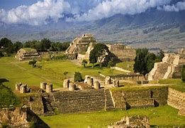
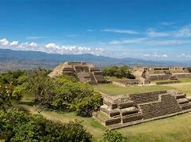
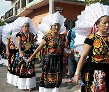

Los zapotecos son originarios del Valle de Oaxaca, en el sureste de México. Su civilización se
desarrolló entre los años 500 a.C. y 1000 d.C. Durante esta época, los zapotecos crearon una
de las civilizaciones más avanzadas de Mesoamérica, que destacó por su capacidad organizativa,
conocimiento de la astronomía, y sus logros en arquitectura y urbanismo.
Monte Albán, una de las principales ciudades zapotecas, fue fundada alrededor del 500 a.C. y
se convirtió en la capital del Valle de Oaxaca. Fue un importante centro ceremonial, político
y económico. La ciudad se encuentra en una loma artificialmente nivelada sobre las montañas,
lo que proporcionaba vistas estratégicas. Sus construcciones incluyen grandes plazas, templos,
y una compleja red de canales y caminos. Es conocida por sus jeroglíficos zapotecos, una forma
temprana de escritura.
Características |
|
|
 |
Los zapotecos son conocidos por su habilidad artística, especialmente en el teñido y
tejido de textiles. En sus comunidades, las mujeres tejían tapices, manteles, y otras
prendas utilizando técnicas tradicionales como el telar de cintura. Los tapices zapotecos
son famosos por sus complejos diseños geométricos y colores brillantes, que utilizan tintes
naturales extraídos de plantas y minerales.
La cerámica zapoteca es otra de las tradiciones destacadas. Los artesanos zapotecos fabricaban
utensilios, figuras rituales y figuras de animales, todas realizadas a mano. Su cerámica era
tanto utilitaria como decorativa.
Sitios Arqueológicos Importantes |
|
|  |
|
El zapoteco pertenece a la familia de lenguas otomangueanas, y tiene muchas variantes dialectales.
A pesar de que el español es la lengua dominante en las regiones zapotecas, aún existen comunidades
que preservan y hablan sus lenguas nativas. Estimaciones sugieren que hay más de 50 variantes de la lengua zapoteca,
que se hablan en diferentes valles y comunidades, aunque en muchas zonas el número de hablantes está disminuyendo.
|  |